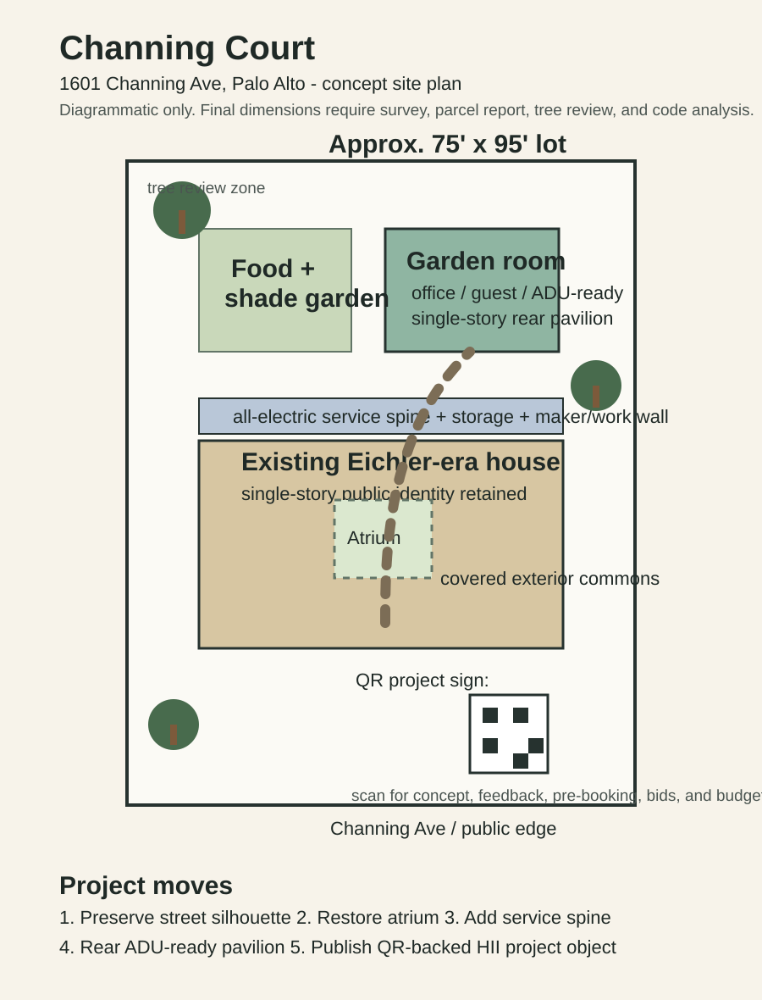

Atrium Calm
Restore the outdoor room as daylight, air, and social core.
Bay Area Eichler retrofit concept / HII project object
Restore the outdoor room as daylight, air, and social core.
Electrification, storage, laundry, and maker/work functions in one disciplined band.
A low garden room that can shift between office, guest suite, and ADU-ready lease space.
A public project node for feedback, bids, bookings, and budget movement.

The street elevation remains low, horizontal, and neighbor-compatible.
The service spine handles the invisible work: electrification, storage, utility, and flexibility.
The garden room tests lease, work, guest, and ADU scenarios without forcing a second story.
The QR sign gathers local feedback and pre-commitments before the project spends full construction money.
A HII project page would collect votes, comments, contractor bids, ADU lease interest, sponsor packages, and investor allocation signals. Each meaningful action becomes a receipt attached to the project.